부문혁신시스템 (SIS)
본문은 강의 내용 기준입니다. 보충 표지는 외부 지식입니다.
SIS — 같은 기술 변화도 산업마다 다른 혁신으로
Sectoral Innovation System (SIS); Pavitt's starting point and the genealogy Pavitt → Malerba → Castellacci → Lee
한 줄 정의
부문혁신시스템(SIS)은 "같은 과학기술 변화도 산업부문마다 서로 다른 혁신으로 이어진다"는 관점이다. 그런데 기업마다 제각각이 아니라 산업별로 패턴이 있다. NIS가 나라별 차이를 봤다면, SIS는 산업별 차이를 본다.
쉽게 말하면 보충
같은 비가 와도 논·과수원·비닐하우스는 다르게 반응한다. 농부 개개인이 다른 게 아니라 작물(산업)마다 패턴이 있다. AI라는 비가 와도 "정유선에 쓰이는 게 다르고 자동차에 쓰이는 게 다 다르다."
핵심 내용
슬라이드 (W07b p6–7)
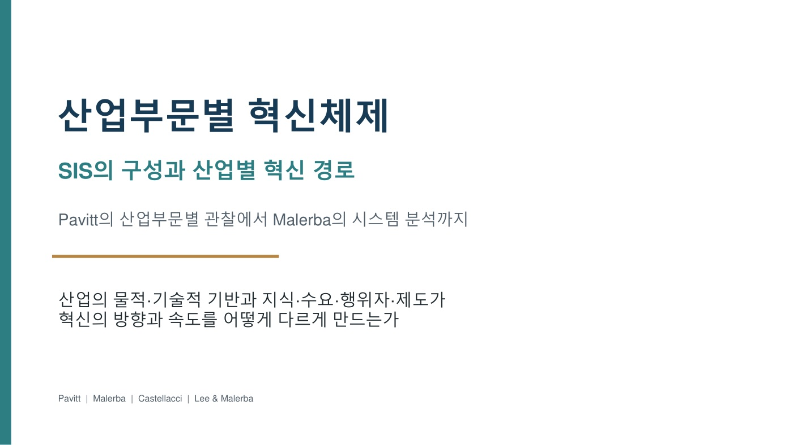
질문: 산업의 물적·기술적 기반과 지식·수요·행위자·제도가 혁신의 방향과 속도를 어떻게 다르게 만드는가. 계보: Pavitt | Malerba | Castellacci | Lee & Malerba
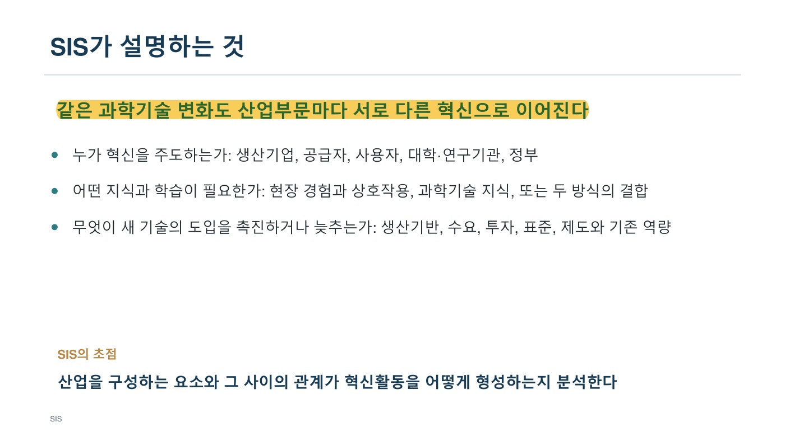
| SIS가 묻는 것 | 내용 |
|---|---|
| 누가 혁신을 주도하는가 | 생산기업, 공급자, 사용자, 대학·연구기관, 정부 |
| 어떤 지식과 학습이 필요한가 | 현장 경험과 상호작용, 과학기술 지식, 또는 둘의 결합 |
| 무엇이 새 기술의 도입을 촉진·지연하는가 | 생산기반, 수요, 투자, 표준, 제도와 기존 역량 |
같은 과학기술 변화도 산업 부문마다 서로 다른 혁신으로 이어진다. AX와 AI가 들어와도 정유선에 쓰이는 게 다르고 자동차에 쓰이는 게 다 다르다는 얘기지. 근데 각 기업마다 다 다르다기보다는 패턴이 있다는 얘기, 바로 그겁니다.
1) Pavitt와 '동심원형 혁신'의 기원 시험 포인트
- SIS의 출발점 Keith Pavitt는 혁신 활동 데이터를 2천 건 넘게 직접 측정해 산업마다 혁신 패턴이 다르다는 것을 찾아냈다.
- W03의 '파도형 vs 동심원형' 구분의 출처가 여기서 밝혀졌다.
제가 SPRU에서 석사를 할 때, Chris Freeman이 기술경제패러다임 발표를 했어요. 거기에 기본 개념이 웨이브. Kondratieff 웨이브, 60년마다 왔다리 갔다리 하는 그래프 기억나시죠? 그 웨이브를 설명하는데, Pavitt가 '호숫가에 돌을 딱 던지면 쫙 퍼져나가는 웨이브도 있지 않느냐', 동심원. 그 질문을 했어요.
- Freeman은 전체 시스템에서 무슨 일이 벌어지는지를 먼저 보고, Pavitt는 기업 내에서 마이크로하게 무슨 일이 벌어지는지를 본다. AI가 터지면 AI 데이터센터가 만든 새 세상도 있지만, 피지컬 AI가 퍼져 나가는 웨이브가 경제적으로는 더 중요하지 않느냐는 질문이었다. 교수님이 이것을 파도형 혁신과 동심원형 혁신으로 풀어냈다.
보충시험 포인트연결 구도: Freeman = 파도형 = TEP(W03/02) = 거시, Pavitt = 동심원형 = SIS = 산업별 확산. W06/04 Freeman vs Lundvall(매크로 vs 마이크로)과도 같은 축이다.
2) 계보: Pavitt → Malerba → Castellacci → 이근
| 연구자 | 기여 |
|---|---|
| Pavitt (1984) | 산업별 혁신 원천과 방식을 경험적으로 분류 |
| Malerba (이탈리아) | 섹터럴 시스템 오브 이노베이션으로 발전 — 요소들의 시스템으로 차이를 설명 |
| Castellacci (2008) | 서비스업까지 분류 확장 |
| 이근 (서울대) · Lee & Malerba | 한국 산업 사례, 산업별 추격 경로 비교 |
- 이근 교수님: Schumpeter 상 수상, 서울대 경제학과에서 거의 유일하게 혁신 연구를 해 온 분(은퇴). Malerba와 함께 많이 작업했고 학생들과 한국 산업 사례를 연구했다(이근·박태영 외 2014 『산업의 추격, 추월, 추락』).
수업에서 나온 논점
- 보충W06/02에서 NIS는 "왜 나라마다 다른가"를 물었다. SIS는 같은 질문을 산업 단위로 바꾼다. W01/10 강의 지도에서 둘 다 "구조의 차이" 축이다.
- Term paper 오리엔테이션(W07a p24)의 교수님 예시도 SIS였다: "'섹터럴 이노베이션 시스템이라는 퍼스펙티브를 가지고 정유 산업을 보겠다' 할 수도 있는 것이고"().
보충 사례 보충
- 보충Keith Pavitt (1937–2002): SPRU 교수님. 1984년 Research Policy 논문 "Sectoral patterns of technical change: Towards a taxonomy and a theory"는 혁신 연구에서 가장 많이 인용되는 논문 중 하나다.
수업 프레임에서의 위치
- NIS(국가 단위) 다음의 두 번째 '구조의 차이' 이론. 다음 회차의 TIS(기술 단위)와 함께 분석 단위를 바꿔 가며 같은 시스템 관점을 적용하는 흐름이다.
출처 · 태그
리딩
- Pavitt (1984)
- Malerba (2002)
- Castellacci (2008)
- Lee & Malerba (2017)
- 이근·박태영 외 (2014)
수업노트
- 수업노트/W07_강의기록_261017.md §5-1, §5-2, §5-3
태그
예상 퀴즈 포인트
- SIS의 핵심 주장("같은 기술 변화도 산업마다 다른 혁신으로, 그러나 패턴이 있다")을 설명하고, SIS가 묻는 세 질문을 쓰라. 서술형
- 비교형: NIS와 SIS는 분석 단위와 질문이 어떻게 다른가? 비교형
- Pavitt의 동심원 질문과 Freeman의 파도(TEP)를 비교하고, 교수님의 파도형/동심원형 혁신 구분과 연결하라. 비교형
Pavitt 분류 — 혁신의 원천은 산업마다 다르다
Pavitt's taxonomy (1984) — supplier-dominated, scale-intensive, specialised suppliers, science-based
한 줄 정의
Pavitt는 1945–1979년 영국 혁신 사례 약 2,000건을 직접 분석해, 혁신이 어디서 오는지(원천)에 따라 산업을 네 유형으로 나눴다. 공급자 지배형(장비·재료를 사 와서 혁신), 규모집약형(대규모 공정을 스스로 개선), 전문공급자형(사용자와 함께 설계), 과학기반형(R&D와 공공 과학). "기업이라고 다 똑같지가 않다. 근데 뭐가 똑같지 않은지를 구분해 내는 거야."
쉽게 말하면 보충
음식점의 맛이 어디서 나오는지로 나눠 보자.
- 공급자 지배형 = 동네 분식집. 맛은 좋은 재료·기계를 사 오는 데서 나온다.
- 규모집약형 = 대형 급식업체. 대량 조리 공정을 얼마나 잘 돌리느냐.
- 전문공급자형 = 주방기기 제작소. 요리사(사용자)가 원하는 대로 맞춤 제작하는 데서 혁신.
- 과학기반형 = 식품공학 연구소. 실험실 연구에서 새 식품이 나온다.
핵심 내용
슬라이드 (W07b p8)
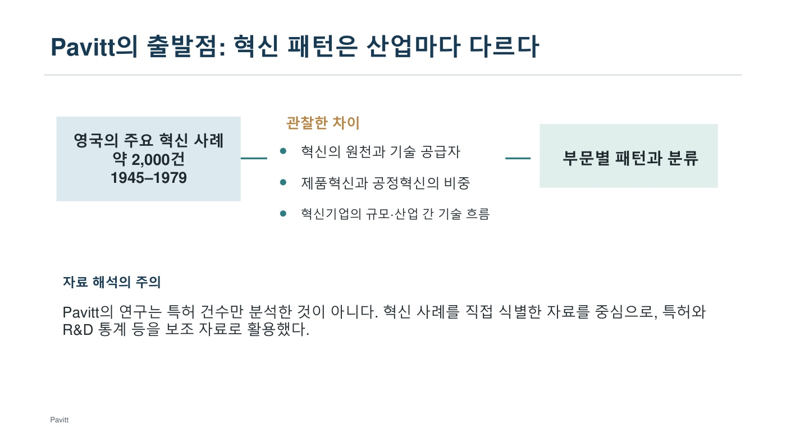
- 영국 주요 혁신 사례 약 2,000건, 1945–1979. 관찰한 차이: 혁신의 원천과 기술 공급자 / 제품혁신과 공정혁신의 비중 / 혁신기업의 규모·산업 간 기술 흐름
- 주의: 특허 건수만 분석한 것이 아니다. 혁신 사례를 직접 식별한 자료가 중심이고 특허·R&D 통계는 보조.
- 혁신이 누구 이름으로 나왔는지(만든 회사인지, 기계를 납품한 회사인지)를 봤다.
- 기업 전략의 두 큰 방향: 비용 절감(cost reduction) 또는 제품 차별화(product differentiation).
네 유형 (W07b p10) 시험 포인트
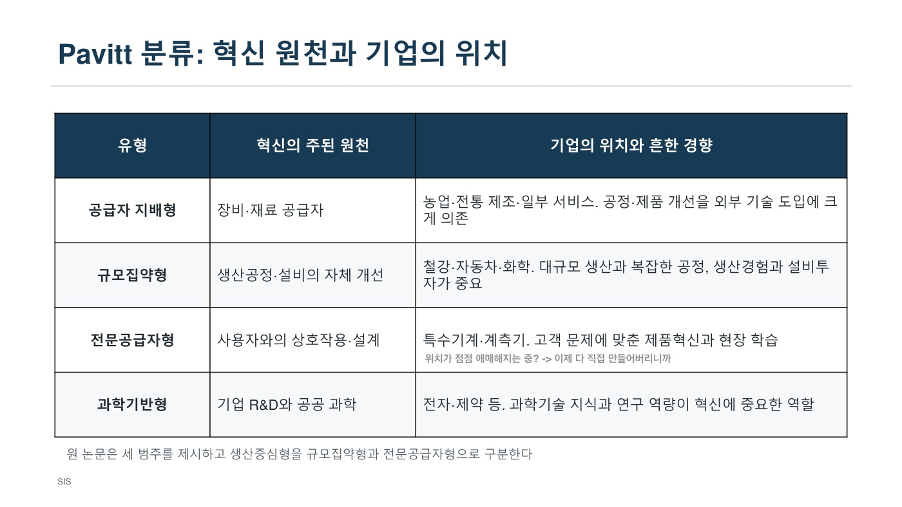
| 유형 | 혁신의 주된 원천 | 대표 산업·경향 |
|---|---|---|
| 공급자 지배형 | 장비·재료 공급자 | 농업·전통 제조·일부 서비스. 외부 기술 도입에 크게 의존 |
| 규모집약형 | 생산공정·설비의 자체 개선 | 철강·자동차·화학. 대규모 생산, 생산경험과 설비투자 |
| 전문공급자형 | 사용자와의 상호작용·설계 | 특수기계·계측기. 고객 문제에 맞춘 제품혁신 |
| 과학기반형 | 기업 R&D와 공공 과학 | 전자·제약. 과학기술 지식과 연구 역량 |
원 논문은 세 범주(공급자 지배 / 생산 중심 / 과학기반)를 제시하고, 생산 중심형을 규모집약형과 전문공급자형으로 나눈다.
세부표 (W07b p9)
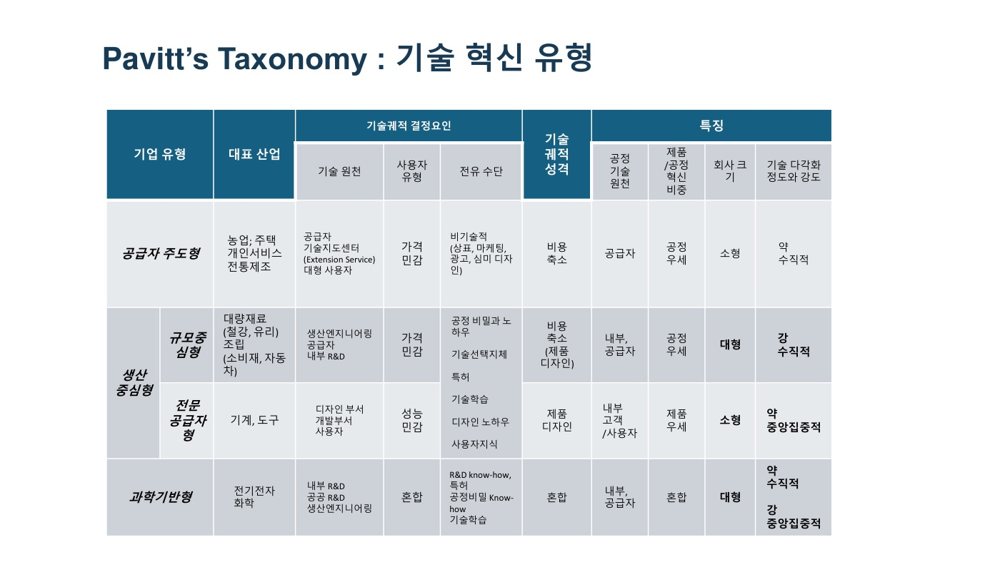
| 공급자 주도형 | 규모중심형 | 전문공급자형 | 과학기반형 | |
|---|---|---|---|---|
| 기술 원천 | 공급자, 기술지도센터 | 생산엔지니어링, 공급자, 내부 R&D | 디자인·개발부서, 사용자 | 내부 R&D, 공공 R&D |
| 사용자 유형 | 가격 민감 | 가격 민감 | 성능 민감 | 혼합 |
| 전유 수단 | 비기술적(상표·마케팅·디자인) | 공정 비밀·노하우, 특허 | 디자인 노하우, 사용자 지식 | R&D 노하우, 특허 |
| 제품/공정 | 공정 우세 | 공정 우세 | 제품 우세 | 혼합 |
| 기업 크기 | 소형 | 대형 | 소형 | 대형 |
교수님의 해설
제약회사랑 정유 회사랑 혁신이 똑같겠어요? 정유 회사는 규모집약형이 되겠지. 공정 기능과 노하우가 되게 중요하죠, 생산 엔지니어링 하는 사람이. 과학기반형은 내부 R&D, 특허가 되게 중요하겠죠. 기업이라고 다 똑같지가 않다는 얘기잖아. 당연한 얘기지. 근데 뭐가 똑같지 않은지를 구분을 해내는 거야. DNA 몇 번이 똑같지 않은지 그런 걸 찾아내는 거.
- 공급자 지배형(농업): 농부가 기계를 만들지 않는다. 인도에서 몬산토 등이 GMO 종자를 팔았고 농부들이 빚을 져서 투자했다가 작황이 나쁘자, GMO 반대 운동에 빚 농사에 대한 반발이 붙었다.
- 규모집약형: 설비 투자가 혁신에 중요. DRAM은 과학기반형이면서 규모집약형 — 한 번 투자할 때 세게 해야 하니 공급량이 확 늘어 사이클이 생길 수밖에 없다.
- 전문공급자형: AI가 등장하면서 사용자들이 다 만들어 버릴 수 있게 되어 위치가 애매해질 것. 제약회사도 AI로 앞단(업스트림)을 많이 줄이고 있다.
- 산업군마다 물적 제약(material constraint)이 다르다. 물적 기반이 다르다는 건 지식의 속성이 다르다는 얘기다.
보충시험 포인트인도 GMO 사례는 W05-2의 시민 인식론과 겹친다. GMO 반대가 "과학을 몰라서"가 아니라 공급자 지배형 산업에서 농부가 진 빚(경제적 위치)과 얽혀 있었다는 것.
수업에서 나온 논점
보충 사례 보충
- 보충전유 수단의 차이: 제약은 특허 하나가 수조 원의 가치를 갖지만, 식품·의류는 특허보다 브랜드가 혁신 수익을 지킨다. 같은 "혁신"이라도 지키는 방법이 산업마다 다르다는 것이 Pavitt 표의 '전유 수단' 행이다.
수업 프레임에서의 위치
- SIS의 경험적 기초. Tidd·Archibugi·Castellacci·이근의 분류가 모두 이 표를 확장한 것이다.
출처 · 태그
리딩
- Pavitt (1984)
수업노트
- 수업노트/W07_강의기록_261017.md §5-4
태그
예상 퀴즈 포인트
- Pavitt의 네 유형을 쓰고, 각각의 혁신 원천·대표 산업을 설명하라. 서술형
- 정유 회사와 제약 회사는 Pavitt 분류에서 각각 어디에 속하며, 혁신에서 무엇이 중요한가? 서술형
- 교수님은 AI 등장으로 어떤 유형의 위치가 애매해진다고 했는가? 그 이유는? 서술형
- 본인 소속 기업(또는 관심 산업)을 Pavitt 분류에 매칭하고 근거를 쓰라. 서술형
확장 분류 — Tidd의 정보집약형과 Archibugi의 패러다임별 기업 유형
Extended taxonomies — information-intensive firms (Tidd et al. 1997); Pavitt types by techno-economic paradigm (Archibugi 2001)
한 줄 정의
Pavitt 분류는 이후 두 방향으로 확장됐다. Tidd et al.(1997)은 IT 시대에 맞춰 정보집약형을 추가했고, Archibugi(2001)는 기술경제패러다임이 바뀔 때마다 새로운 기업 유형이 등장했다고 보았다(기계화 → 공급자 지배형, 증기·철도 → 전문공급자형, 과학적 발견 → 과학기반형, 포드주의 → 규모집약형, ICT → 정보집약형, 그리고 이제 플랫폼 기업). Pavitt와 Freeman을 같이 연결한 것이다.
쉽게 말하면 보충
시대마다 새로운 직업이 생긴다. 증기기관 시대엔 기계공, 전기 시대엔 화학자, 자동차 시대엔 대량생산 공장장, 인터넷 시대엔 개발자, 지금은 플랫폼 운영자. Archibugi는 큰 기술 물결(파도형, Freeman)이 올 때마다 그 물결에 맞는 기업 형태(Pavitt 유형)가 새로 생긴다고 정리했다.
핵심 내용
Tidd et al. (1997) — 정보집약형 추가 (W07b p11)
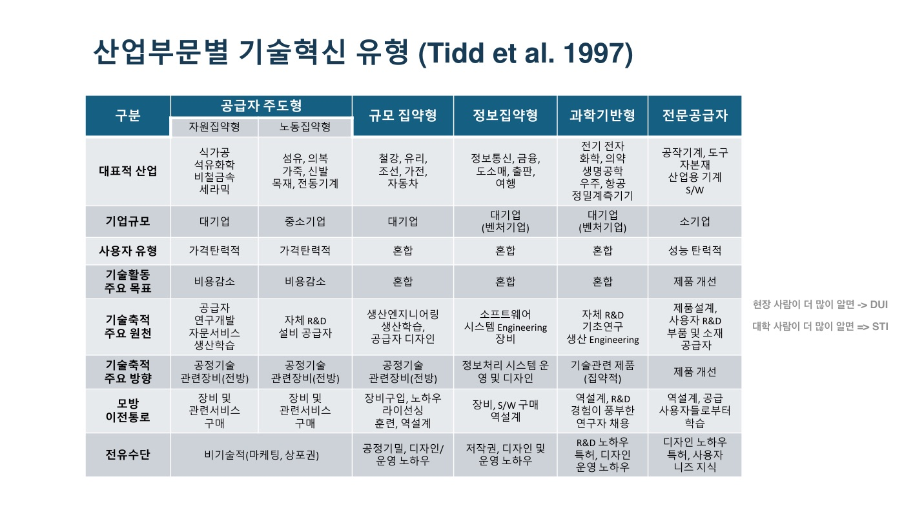
| 유형 | 대표 산업 | 기술축적 주요 원천 |
|---|---|---|
| 공급자 주도형 | 섬유·의복·가죽·목재 | 공급자, 생산학습 |
| 규모집약형 | 철강·유리·조선·가전·자동차 | 생산엔지니어링, 생산학습, 설비 공급자 |
| 정보집약형 | 정보통신, 금융, 도소매, 출판, 여행 | 소프트웨어·시스템 엔지니어링 |
| 과학기반형 | 전기전자·화학·의약·생명공학 | 자체 R&D, 기초연구 |
| 전문공급자 | 우주항공·정밀계측·공작기계·S/W | 제품설계, 사용자 |
- 항공기는 전문공급자형(공군이 비행기를 만들 수는 없으니), 오라클 같은 회사는 정보집약형.
Archibugi (2001) — 자본주의 발전과 Pavitt 기업 유형 (W07b p12) 시험 포인트
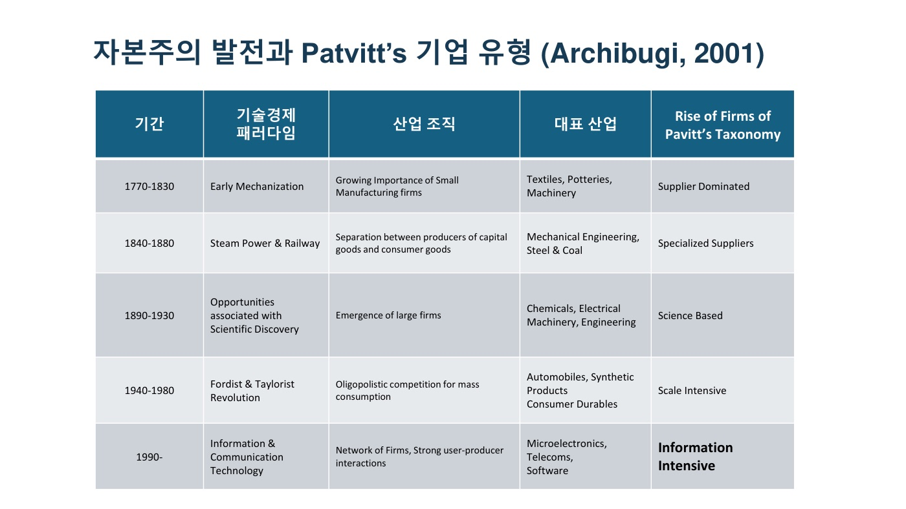
| 기간 | 기술경제 패러다임 | 대표 산업 | 부상한 Pavitt 유형 |
|---|---|---|---|
| 1770–1830 | 초기 기계화 | 섬유·도기·기계 | 공급자 지배형 |
| 1840–1880 | 증기력·철도 | 기계공학·철강·석탄 | 전문공급자형 |
| 1890–1930 | 과학적 발견의 기회 | 화학·전기기계 | 과학기반형 |
| 1940–1980 | 포드주의·테일러주의 | 자동차·합성제품·내구소비재 | 규모집약형 |
| 1990– | 정보통신기술 | 마이크로전자·통신·소프트웨어 | 정보집약형 (강한 사용자–생산자 상호작용) |
파도형이 올 때마다 새로운 기업의 형태들이 나타난 거예요. (…) Pavitt과 Freeman을 같이 연결을 하는 거죠.
- 화학 시대의 과학기반형 예: 듀퐁. 정보집약형 다음은 이제 플랫폼 기업.
보충시험 포인트W07-2/01에서 Freeman(파도)과 Pavitt(동심원)이 대비되었다면, Archibugi는 둘을 한 표에 합쳤다. 파도(패러다임)가 오면 → 새 기업 유형이 생기고 → 그 유형이 동심원처럼 퍼진다. W03/01 Kondratieff 장기파동, W03/02 TEP의 연표와 나란히 보면 좋다.
물질세계를 치고 들어간 것
따지고 보면 물질세계를 위해서 사람들이 계속 치고 들어오는 거예요. 어떻게 하면 우리가 자원을 이용할까. 그걸 가만히 보면 다 머티리얼 베이스가 다른 애들. 저번에도 얘기했지만 중국·한국·일본에서는 공자 명심하고 이랬을 때, 얘네들은 딴짓을 한 거야. 물질의 세계를 치고 들어가는 거예요.
보충W06 Q1 토론의 "동양은 너무 철학적이어서 실사구시를 못 했다"와 같은 이야기다. 산업 유형의 차이는 결국 어떤 물질을 다루느냐(물적 기반)의 차이다 → W07-2/07.
수업에서 나온 논점
- 보충예나의 삼성페이 앱 개발을 교수님은 정보집약형으로 분류했다 → W07-2/04.
보충 사례 보충
- 보충플랫폼 기업의 혁신 원천: 구글·아마존 같은 플랫폼은 자체 R&D도 크지만, 핵심 원천은 사용자 데이터와 외부 개발자(보완자)다. Pavitt의 어느 유형에도 딱 맞지 않아, W01/11 Innovation Ecosystem 이론(오케스트레이터)이 따로 필요해진 이유이기도 하다.
수업 프레임에서의 위치
- SIS 분류가 고정된 표가 아니라 시대에 따라 바뀐다는 점을 보여 준다. 다음의 Castellacci(W07-2/08)는 이 흐름에서 서비스업까지 넓힌 것이다.
출처 · 태그
리딩
- Tidd, Bessant & Pavitt (1997)
- Archibugi (2001)
수업노트
- 수업노트/W07_강의기록_261017.md §5-5
태그
예상 퀴즈 포인트
- Archibugi(2001)는 Pavitt 분류와 Freeman의 기술경제패러다임을 어떻게 연결했는가? 시대별로 부상한 기업 유형을 쓰라. 서술형
- Tidd et al.(1997)이 추가한 정보집약형의 특징과 대표 산업을 쓰라. 서술형
산업별 학습 방식 — DUI와 STI의 조합
Sectoral learning modes — combinations of DUI and STI
한 줄 정의
W02의 두 학습 방식 — 현장 경험 기반 DUI와 과학기술 기반 STI — 의 비중과 연결 방식이 산업마다 다르다. 간단한 판별법: 현장 사람이 대학 교수보다 더 많이 알면 DUI가 강한 산업, 대학 교수가 더 많이 알면 STI가 강한 산업. 기업은 자기 강점이 어디서 오는지 알아야 하고("우리 산업의 정체가 뭔지를 파악"), 급진적 혁신에는 STI가 들어가야 한다.
쉽게 말하면 보충
김치 공장과 신약 연구소. 김치 맛의 비밀은 공장 장인의 손끝(DUI)에 있어서 식품공학 교수님이 와도 쉽게 못 따라 한다. 신약의 비밀은 실험실 논문(STI)에 있어서 공장 장인이 아무리 오래 일해도 새 분자를 만들 수 없다.
핵심 내용
슬라이드 (W07b p13)
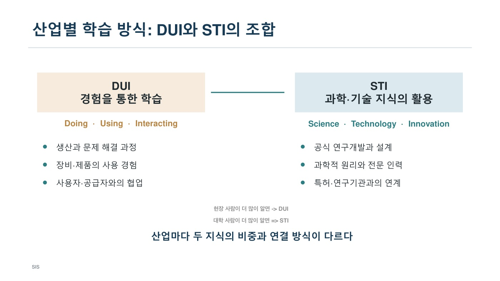
| DUI (Doing·Using·Interacting) | STI (Science·Technology·Innovation) | |
|---|---|---|
| 학습 | 경험을 통한 학습 | 과학·기술 지식의 활용 |
| 장면 | 생산과 문제 해결 과정 / 장비·제품의 사용 경험 / 사용자·공급자와의 협업 | 공식 연구개발과 설계 / 과학적 원리와 전문 인력 / 특허·연구기관과의 연계 |
"산업마다 두 지식의 비중과 연결 방식이 다르다."
1) 판별법 — 현장이 더 아나, 교수님이 더 아나 시험 포인트
아주 쉽게 얘기하면, 대학 교수보다 여기 현장에 있는 사람이 더 많이 알면 DUI가 강한 거고, 대학 교수가 많이 알면 STI가 강한 걸로 얘기할 수 있어요. 정유 같은 데는 아마 UNIST 교수보다 내부에 있는 사람이 훨씬 더 많이 알 걸. 근데 제약은 대학에 더 많이 가죠.
- 기업은 내 지식의 강점이 DUI에서 나오는지, STI에서 가져와야 하는지 따져야 한다.
- 급진적 혁신에는 STI가 들어가야 한다. 면직물 공장에서 합성섬유를 만들 수는 없다 — 전혀 다른 지식 기반이 필요.
- 삼성바이오로직스는 신약 개발이 아니라 생산 엔지니어링 중심이니 규모집약형 성격이 강하다 — "우리 산업의 정체가 뭔지를 파악하는 겁니다."
2) 예나의 사례 — 삼성페이 앱 개발 시험 포인트
- 교수님이 참석자에게 소속을 물었고, 예나가 "삼성페이 앱 개발"이라고 답하자: 정보집약형이며, 시스템 엔지니어링 쪽은 사이언스보다 DUI가 더 강할 것이라고 했다. 네이버도 비즈니스 성격에 따라 규모 쪽으로 갈지 고민할 것.
- 벤처 투자도 DUI가 훨씬 강하다. 다만 AI로 전문가 시스템을 만들어 현장 지식을 코드화하면 대학 교수가 진짜 잘할 수도 있다.
보충시험 포인트마지막 단서가 중요하다. AI가 DUI(암묵지)를 STI(형식지)로 바꾸면 산업의 정체성 자체가 바뀔 수 있다. W06/07의 "피지컬 AI는 암묵지를 형식지로 바꾸는 작업, 그래도 암묵지는 계속 나온다"와 같은 논점이다.
수업에서 나온 논점
- 수업노트 정제 노트: 5-6절은 W02의 DUI/STI를 산업 분류와 결합한 것이다.
- Term paper 후보(수업노트 표시): 본인 소속 기업을 Pavitt/Castellacci 분류에 매칭 — 예나의 경우 삼성페이 앱 개발을 정보집약형·KIBS 관점에서, AX를 매개하는 SI·KIBS의 역할로 분석 → W07-2/08.
보충 사례 보충
- 보충Jensen et al.(2007, W02-1/04)의 결론 — STI와 DUI를 결합한 기업이 혁신 성과가 가장 높다 — 을 SIS 관점에서 다시 읽으면, "어떤 비율로 결합하느냐"가 산업마다 다르다는 것이 된다.
수업 프레임에서의 위치
- 미시적 기초(W02-1) → 국가(W06/07) → 산업(W07-2/04). 같은 STI/DUI 프레임이 세 단위에서 반복된다.
출처 · 태그
리딩
- Jensen et al. (2007)
수업노트
- 수업노트/W07_강의기록_261017.md §5-6
태그
예상 퀴즈 포인트
- 산업마다 DUI와 STI의 비중이 다르다는 주장을 정유·제약 사례로 설명하라. (교수님의 판별법 포함) 서술형
- 급진적 혁신에 STI가 필요한 이유를 설명하라. 서술형
- 비교형: STI/DUI는 W02(기업), W06(국가), W07(산업)에서 각각 어떻게 쓰였는가? 비교형
Malerba의 SIS — 산업을 이루는 여섯 요소와 그 작동
Malerba's SIS — six building blocks and their dynamics
한 줄 정의
Pavitt가 산업별 차이를 분류했다면, Malerba는 그 차이를 시스템으로 설명한다. 산업은 지식과 학습 · 기술·투입요소 · 수요 · 행위자 · 상호작용 · 제도의 여섯 요소로 이뤄지고, 이 요소들이 연결되어 돌아가다가 사용과 경쟁의 결과에 따라 다시 바뀐다. 이것은 분석의 손잡이(analytical handle) — 현미경을 어디에 맞출지 알려 주는 틀이다.
쉽게 말하면 보충
한 동네 상권을 분석하는 체크리스트다. 무슨 노하우가 있나(지식), 어떤 재료·장비를 쓰나(기술·투입), 손님은 누구고 뭘 원하나(수요), 가게·도매상·구청은 누구나(행위자), 서로 얼마나 거래·협력하나(상호작용), 영업 규칙·위생 기준은 뭔가(제도). 장사가 잘되고 안되는 결과가 다시 이 여섯 칸을 바꾼다.
핵심 내용
여섯 요소 (W07b p14) 시험 포인트
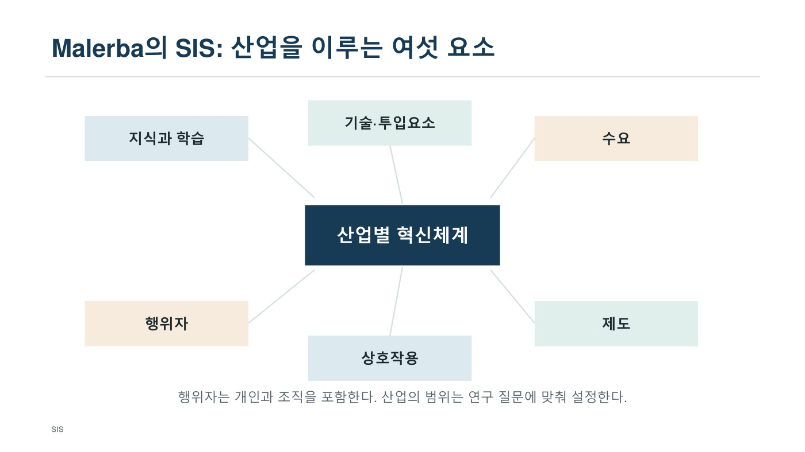
| 요소 | 보충묻는 것 |
|---|---|
| 지식과 학습 | 이 산업의 핵심 지식은 무엇이고 어떻게 배우나 |
| 기술·투입요소 | 어떤 기술·재료·장비를 쓰나 |
| 수요 | 누가 사고, 무엇을 요구하나 |
| 행위자 | 기업·대학·정부·사용자 등 (개인과 조직 포함) |
| 상호작용 | 경쟁·협력·거래·네트워크 |
| 제도 | 규칙·표준·지원 |
"행위자는 개인과 조직을 포함한다. 산업의 범위는 연구 질문에 맞춰 설정한다."
보충시험 포인트마지막 문장이 Term paper에서 중요하다. "정유 산업"을 볼지 "석유화학 전체"를 볼지는 내 질문이 정한다. 경계를 먼저 정의하고 시작해야 한다.
작동 방식 (W07b p16)
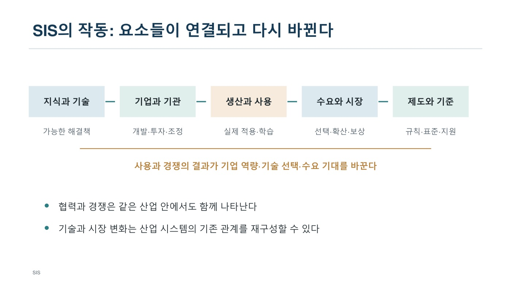
- 흐름: 지식과 기술(가능한 해결책) → 기업과 기관(개발·투자·조정) → 생산과 사용(실제 적용·학습) → 수요와 시장(선택·확산·보상) / 제도와 기준(규칙·표준·지원)
- "사용과 경쟁의 결과가 기업 역량·기술 선택·수요 기대를 바꾼다."
- "협력과 경쟁은 같은 산업 안에서도 함께 나타난다."
- "기술과 시장 변화는 산업 시스템의 기존 관계를 재구성할 수 있다."
이런 지식과 기술, 기업과 기관, 생산과 사용, 시장, 제도와 기준 — 시스템이 돌아가는 방식들이 있는데, 이걸 어널리티컬 핸들이죠. 어디를 붙잡고, 현미경을 어디다 맞출 것인지를 얘기하는 겁니다.
수업에서 나온 논점
- 보충W06/01 NIS 도식(기업 가운데 + 정책·지식·노동·사용자)과 비교하면, Malerba는 수요와 기술·투입요소를 독립 요소로 세운다는 점이 다르다. 산업 단위에서는 "무엇을 만드나(물적 기반)"와 "누가 사나"가 국가 단위보다 훨씬 구체적이기 때문이다 → W07-2/07 물적 기반.
- 보충교수님이 강의 끝에 "기존 연구는 생산 쪽이 훨씬 많이 강조되어 있고 규제·사용자 쪽은 더 연구해야"라고 한 것(W07-2/11)은, 이 여섯 요소 중 수요·제도 칸이 비어 있다는 뜻이다.
보충 사례 보충
- 보충제약 산업에 여섯 요소 적용: 지식(생명과학), 기술·투입(임상·생산설비), 수요(환자 → 의사 처방 → 보험), 행위자(제약사·병원·규제기관·대학), 상호작용(기술이전·임상협력), 제도(특허·허가). W07b p31의 제약 사례가 정확히 이 구조다 → W07-2/10.
수업 프레임에서의 위치
- SIS의 이론적 핵심. Pavitt(분류) → Malerba(시스템) → Castellacci(서비스 확장) → Lee & Malerba(추격 경로)의 두 번째 단계.
- 기술체제(W07-2/06)는 이 중 지식과 학습 요소를 더 쪼갠 것이다.
출처 · 태그
리딩
- Malerba (2002)
- Malerba & Orsenigo (1997)
수업노트
- 수업노트/W07_강의기록_261017.md §5-7
태그
예상 퀴즈 포인트
- Malerba의 SIS 여섯 요소를 쓰고, Pavitt의 분류 접근과 무엇이 다른지 설명하라. 서술형
- "사용과 경쟁의 결과가 기업 역량·기술 선택·수요 기대를 바꾼다"는 SIS의 동태적 측면을 설명하라. 서술형
- 비교형: NIS 도식(W06/01)과 Malerba의 SIS 여섯 요소를 비교하라. 비교형
기술체제와 누적성 — 전기차와 바이브 코딩
Technological regime — opportunity, appropriability, cumulativeness, knowledge base; Schumpeter Mark I vs Mark II
한 줄 정의
기술체제(technological regime)는 한 산업에서 혁신이 일어나는 조건을 네 차원으로 본다. 기술적 기회(새 기술을 만들 기회가 풍부한가), 전유 가능성(혁신의 수익을 지킬 수 있나), 누적성(오늘의 지식이 내일의 혁신으로 이어지나), 지식기반(지식이 얼마나 복합적·암묵적인가). 그중 누적성은 "이 길을 거치지 않으면 저쪽 길로 갈 수 없다"는 뜻인데, 중국 전기차와 AI 바이브 코딩은 이 누적성을 치워 버렸다.
쉽게 말하면 보충
누적성 = 계단. 피아노는 바이엘 → 체르니 → 쇼팽 순서를 밟아야 한다. 먼저 시작한 사람이 계속 앞선다. 그런데 누군가 엘리베이터(전기차, AI)를 놓으면 계단을 오래 오른 사람의 우위가 사라진다. 처음부터 엘리베이터를 탄 사람(중국)이 꼭대기에 먼저 도착할 수도 있다.
핵심 내용
슬라이드 (W07b p15)
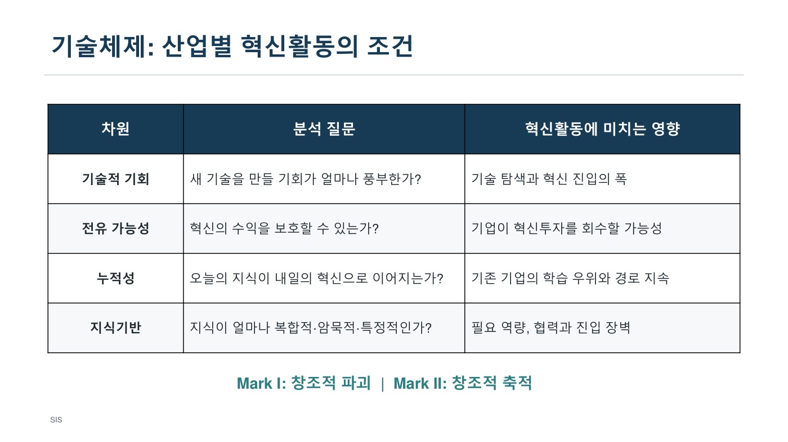
| 차원 | 분석 질문 | 혁신활동에 미치는 영향 |
|---|---|---|
| 기술적 기회 | 새 기술을 만들 기회가 얼마나 풍부한가? | 기술 탐색과 혁신 진입의 폭 |
| 전유 가능성 | 혁신의 수익을 보호할 수 있는가? | 기업이 혁신투자를 회수할 가능성 |
| 누적성 | 오늘의 지식이 내일의 혁신으로 이어지는가? | 기존 기업의 학습 우위와 경로 지속 |
| 지식기반 | 지식이 얼마나 복합적·암묵적·특정적인가? | 필요 역량, 협력과 진입 장벽 |
Mark I: 창조적 파괴 | Mark II: 창조적 축적
보충시험 포인트Mark I / Mark II 구분:
- Mark I (창조적 파괴, 젊은 Schumpeter): 기회가 많고 누적성·전유성이 낮다 → 새 기업이 쉽게 들어와 기존 기업을 무너뜨린다. 넓게 퍼진(widening) 혁신.
- Mark II (창조적 축적, 후기 Schumpeter): 누적성·전유성이 높다 → 기존 대기업이 계속 앞선다. 깊어지는(deepening) 혁신.
- 어느 체제냐가 그 산업에서 누가 혁신하는지를 정한다.
누적성을 치워 버리다 — 전기차 시험 포인트
누적적이라는 얘기는 이 길을 거치지 않으면 저쪽 길로 갈 수 없다는 겁니다. 근데 중국은 내연기관도 안 가고 전기차로 넘어가 버렸어요. 아예 다른 길로. 누적성을 딱 치워버리는 거지. 만약 전기자동차가 없었으면 독일 자동차 회사들이 저렇게 쉽게 줄어들지 않았을 거. 독일이 내연기관에서 갖고 있던 정도의 엔지니어링 기술의 어드밴티지가 다시 사라져버렸어요.
AI도 그렇다 — 바이브 코딩 시험 포인트
지금 AI도 그러거든요. 바이브 코딩. 옛날에는 코딩을 잘해야 수준이 올라가는 거였는데, 지금은 그냥 '니가 해' 그럼 시키는 대로. 누적성이 갖고 있던 어드밴티지가 다 사라지는 거죠. (…) 그럼에도 불구하고 계속 가죠. AI가 바이브 코딩을 하더라도 AI를 잘 쓰는 방법 — 일본 어떤 제조업 회사는 신입 사원들한테 AI 교육을 시켜서 실제 제조 공정을 AX로 하게끔 한다더라고요.
보충시험 포인트교수님의 결론은 "누적성이 끝났다"가 아니다. 옛 누적성(코딩 숙련)의 우위는 사라지지만 "AI를 잘 쓰는 방법"이라는 새로운 누적성이 시작된다. W06/07의 "암묵지는 계속 나온다"와 같은 구조.
수업에서 나온 논점
- 수업노트 토론 질문 후보: "AI·전기차가 누적성을 무력화하면 후발국 추격 논리는 어떻게 바뀌나."
- 수업노트 정제 노트: 5-7절의 누적성은 W02의 "unlearning이 어렵다"와 통한다. 누적성이 높을수록 기존 기업은 앞서지만, 판이 바뀌면 그 누적이 고착(W01/05)이 된다.
- DRAM은 반대로 누적성이 여전히 강한 사례다: "중국이 아무리 해도 할 수가 없는 거예요" → W07-2/10.
보충 사례 보충
- 보충도약(leapfrogging): 후발국이 중간 단계를 건너뛰는 추격. 아프리카가 유선전화망 없이 바로 모바일 결제(케냐 M-Pesa)로 간 것이 대표 사례다. 이근 교수님의 추격 사이클·경로 창출형 추격 논의와 맞닿는다.
수업 프레임에서의 위치
- SIS 중 추격 이론과 가장 직접 연결되는 개념. 누적성이 낮아지는 순간이 W07-2/07의 추격의 창(window of opportunity)이다.
- W03/03 파도형 혁신(새 패러다임)이 누적성을 리셋한다고 보면, 동심원형 혁신은 기존 누적성 위에서 일어난다.
출처 · 태그
리딩
- Malerba & Orsenigo (1997) Technological regimes and sectoral patterns ★SIS Core Reading
수업노트
- 수업노트/W07_강의기록_261017.md §5-7
태그
예상 퀴즈 포인트
- 기술체제의 네 차원을 쓰고, 그중 누적성의 의미를 설명하라. 서술형
- 중국 전기차와 AI 바이브 코딩 사례로 "누적성이 치워질 때" 무슨 일이 일어나는지 설명하고, 후발국 추격에 주는 함의를 논하라. (토론 질문 후보) 서술형
- Schumpeter Mark I(창조적 파괴)과 Mark II(창조적 축적)를 기술체제 차원으로 구분하라. 서술형
물적 기반과 추격의 창 — 철강·카메라·와인
Material base mediates technology adoption; windows of opportunity differ by sector (Lee & Malerba)
한 줄 정의
산업이 무엇을 어떻게 만드는지(물적 기반)가 새 기술이 들어오는 경로와 속도를 정한다. 연속 대규모 공정은 설비 주기가 길고, 조립제품은 공급망 조정이, 소프트웨어는 표준·사용자 규모가 관건이다. 그래서 후발국에게 추격의 창(window of opportunity)도 산업마다 다른 모습으로 열린다 — 기술 세대 전환, 경기 하강기, 수요·유통 변화.
쉽게 말하면 보충
이사를 하려 할 때, 원룸 사는 사람은 짐 싸서 바로 옮기지만 공장 가진 사람은 기계를 뜯고 옮기는 데 몇 년이 걸린다(물적 기반). 그래서 새 동네가 좋아져도 누가 먼저 옮겨 가느냐가 다르다. 추격의 창은 "이사 비용이 기존 강자에게 특히 비쌀 때" 열린다.
핵심 내용
물적 기반은 새 기술의 적용 경로를 매개한다 (W07b p17) 시험 포인트
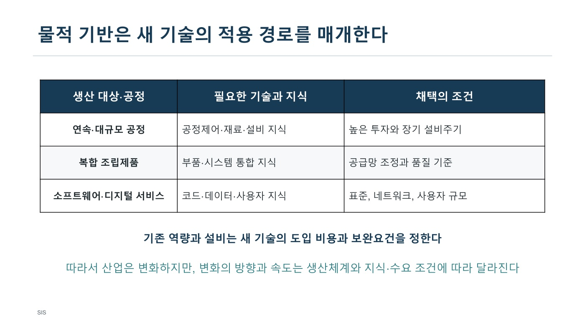
| 생산 대상·공정 | 필요한 기술과 지식 | 채택의 조건 |
|---|---|---|
| 연속·대규모 공정 | 공정제어·재료·설비 지식 | 높은 투자와 장기 설비주기 |
| 복합 조립제품 | 부품·시스템 통합 지식 | 공급망 조정과 품질 기준 |
| 소프트웨어·디지털 서비스 | 코드·데이터·사용자 지식 | 표준, 네트워크, 사용자 규모 |
"기존 역량과 설비는 새 기술의 도입 비용과 보완요건을 정한다." → 산업은 변화하지만 방향과 속도는 생산체계와 지식·수요 조건에 따라 달라진다.
- 복합 조립제품의 공급망은 W01 생태계의 오케스트레이션과 겹친다. 시스템 관점들은 딱딱 구분되기보다 겹치는 부분이 있다.
세 사례 (W07b p18–20)
철강 — 설비와 공정역량 (p18)
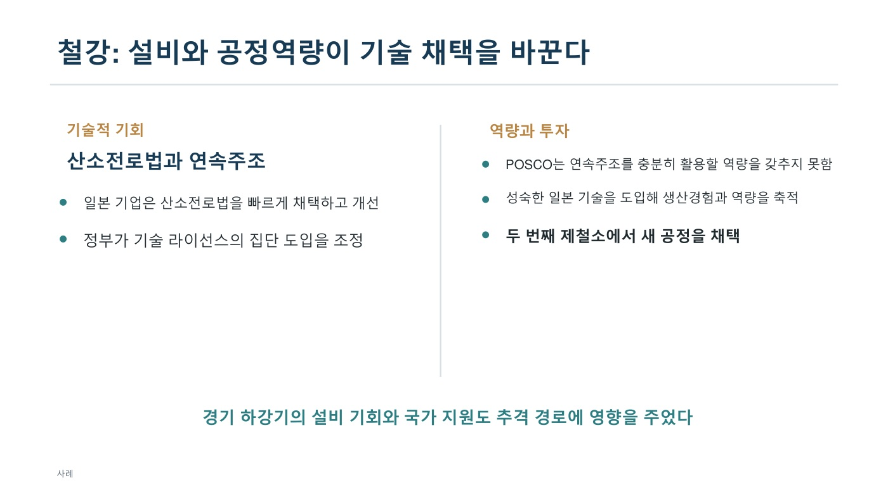
- 일본은 산소전로법을 빠르게 채택·개선, 정부가 기술 라이선스 집단 도입을 조정. POSCO는 처음엔 연속주조를 충분히 활용할 역량이 없어 성숙한 일본 기술을 도입해 생산경험을 축적하고, 두 번째 제철소에서 새 공정을 채택. 경기 하강기의 설비 기회와 국가 지원도 영향.
- 독자 공법(파이넥스)도 개발. 핵심은 설비와 공정 역량(process capability).
카메라 — 기존 역량을 강화하거나 무력화 (p19)
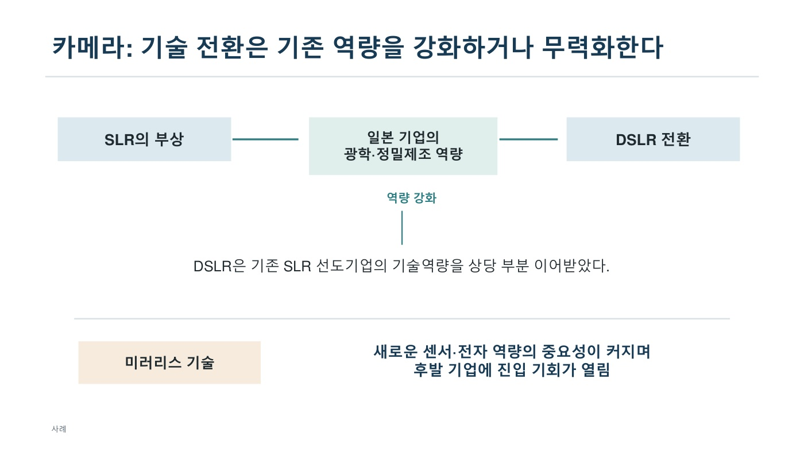
- SLR → DSLR: 일본 기업의 광학·정밀 역량이 이어졌다(역량 강화). → 미러리스: 센서·전자 역량이 중요해지며 후발 기업에 진입 기회.
- 디지털화로 광학 카메라가 사라지는 카니발리제이션 — 나의 새 역량이 기존 역량을 잡아먹을 때, 안 하려다 놓치는 일.
와인 — 수요와 유통이 혁신을 이끈다 (p20)
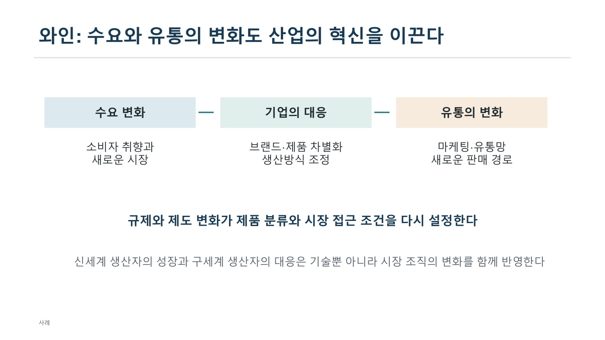
- 소비자 취향·새 시장 → 브랜드·차별화, 마케팅·유통망 변화. 규제가 제품 분류와 시장 접근을 재설정. 신세계 생산자의 성장 vs 구세계의 대응.
- 사이언스가 많지 않은 산업에서는 수요·유통의 변화가 혁신을 이끈다. 연구가 많이 안 되어 있어 더 연구해야 한다. 한국 농업의 대체육도 소비·유통이 열려야 된다.
추격의 창은 산업마다 다르다 (W07b p21, Lee & Malerba) 시험 포인트
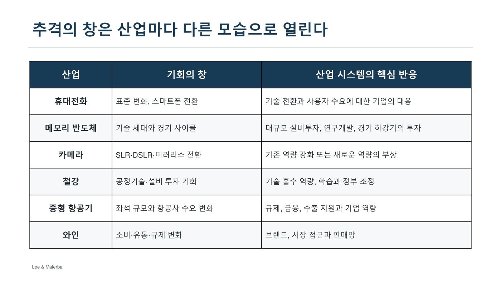
| 산업 | 기회의 창 | 핵심 반응 |
|---|---|---|
| 휴대전화 | 표준 변화, 스마트폰 전환 | 기술 전환과 사용자 수요에 대한 대응 |
| 메모리 반도체 | 기술 세대와 경기 사이클 | 대규모 설비투자, R&D, 경기 하강기의 투자 |
| 카메라 | SLR·DSLR·미러리스 전환 | 기존 역량 강화 또는 새 역량 부상 |
| 철강 | 공정기술·설비 투자 기회 | 흡수 역량, 학습과 정부 조정 |
| 중형 항공기 | 좌석 규모와 항공사 수요 변화 | 규제, 금융, 수출 지원 |
| 와인 | 소비·유통·규제 변화 | 브랜드, 시장 접근과 판매망 |
- 휴대폰: 노키아가 사라지고 애플로 정리된 것. 메모리: 경기 하강기에 공격적으로 투자해 시장을 정리하는 삼성 전략.
보충시험 포인트Lee & Malerba의 창은 세 종류로 정리된다: 기술의 창(새 기술 세대), 수요의 창(경기 사이클·새 수요), 제도의 창(정부 정책·규제). 표의 산업들을 이 세 칸에 나눠 넣으면 서술형 답안 골격이 된다.
수업에서 나온 논점
- 보충카메라의 카니발리제이션은 W01/05 조직 고착의 산업판이다. 기존 역량이 클수록 새 기술을 스스로 안 하려다 놓친다(코닥의 디지털카메라).
- 와인·대체육: "수요·유통 쪽은 더 연구해야" — 교수님이 반복해 지적한 SIS 연구의 빈자리. Term paper 후보(수업노트 표시)인 '사용자 공동혁신형·수요자 창출 시장' 분석과 같은 방향이다.
보충 사례 보충
- 보충코닥: 1975년 디지털카메라를 처음 만들었지만 필름 사업을 잠식할까 봐 키우지 않았고, 2012년 파산 보호를 신청했다. 카니발리제이션 회피의 교과서 사례.
- 보충신세계 와인: 칠레·호주 와인은 품종을 라벨에 크게 쓰는 방식(구세계는 산지 중심)과 대형 유통망 공략으로 1990년대 이후 시장을 넓혔다. 기술이 아니라 표시 방식과 유통의 혁신이다.
수업 프레임에서의 위치
- SIS를 추격 이론으로 쓰는 대목. W02-1/09 후발국의 역방향 궤적(POSCO도 성숙기술 도입부터)과, W07-2/06 누적성(창이 열리는 조건)을 잇는다.
출처 · 태그
리딩
- Lee & Malerba (2017) Catch-up cycles and changes in industrial leadership
수업노트
- 수업노트/W07_강의기록_261017.md §5-8
태그
예상 퀴즈 포인트
- "물적 기반은 새 기술의 적용 경로를 매개한다"는 주장을 세 생산 유형(연속공정·조립·소프트웨어)으로 설명하라. 서술형
- 추격의 창(window of opportunity)이 산업마다 다르게 열린다는 Lee & Malerba의 주장을 두 산업 이상의 사례로 설명하라. 서술형
- 카메라 사례에서 기술 전환이 기존 역량을 '강화'하는 경우와 '무력화'하는 경우를 구분하라. 서술형
Castellacci 분류와 KIBS — 서비스업까지 넓히다
Castellacci (2008) taxonomy of manufacturing and services; Knowledge-Intensive Business Services (KIBS)
한 줄 정의
Castellacci(2008)는 제조업 중심이던 Pavitt 분류를 서비스업까지 넓히고, 산업이 다른 산업에 무엇을 제공하는가(산업 간 역할)로 네 범주를 만들었다: 고급 지식 제공자 / 대량생산제품 / 지원 인프라 서비스 / 공급자 지배형 상품·서비스. 그 첫 칸의 핵심이 KIBS(지식집약 사업서비스) — 기계가 아니라 지식을 파는 서비스로, AX·디지털 전환이 잘 흘러가게 만드는 산업이다.
쉽게 말하면 보충
건물을 짓는 생태계로 보면, 설계사무소·구조컨설팅(고급 지식 제공자), 철근·시멘트·가전 공장(대량생산), 전기·수도·도로·은행(지원 인프라), 동네 인테리어 가게(공급자 지배형). 설계사무소가 잘해야 나머지가 제대로 돌아간다. KIBS는 경제 전체의 설계사무소다.
핵심 내용
네 범주 (W07b p22) 시험 포인트
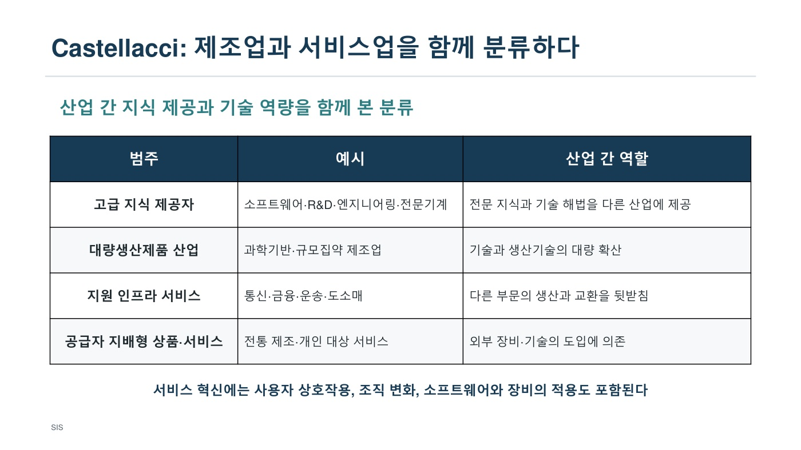
| 범주 | 예시 | 산업 간 역할 |
|---|---|---|
| 고급 지식 제공자 | 소프트웨어·R&D·엔지니어링·전문기계 | 전문 지식과 기술 해법을 다른 산업에 제공 |
| 대량생산제품 | 과학기반·규모집약 제조업 | 기술과 생산기술의 대량 확산 |
| 지원 인프라 서비스 | 통신·금융·운송·도소매 | 다른 부문의 생산과 교환을 뒷받침 |
| 공급자 지배형 상품·서비스 | 전통 제조·개인 대상 서비스 | 외부 장비·기술의 도입에 의존 |
"서비스 혁신에는 사용자 상호작용, 조직 변화, 소프트웨어와 장비의 적용도 포함된다."
보충시험 포인트Pavitt와의 대응: 고급 지식 제공자 = KIBS + 전문공급자형, 대량생산 = 과학기반형 + 규모집약형, 공급자 지배형은 그대로. 지원 인프라 서비스가 새로 생긴 칸이다.
세부표 (W07b p23)
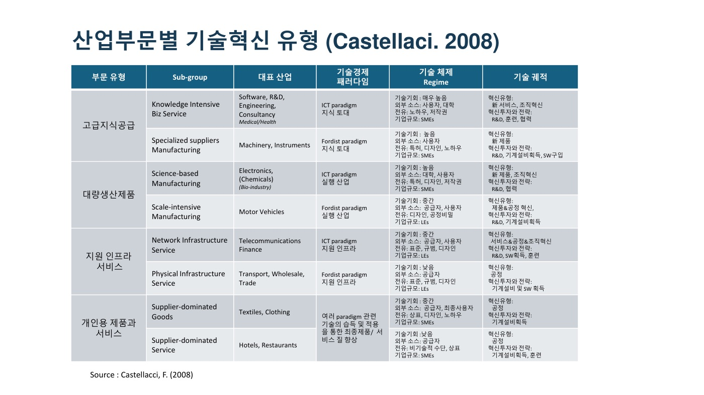
- KIBS(소프트웨어·R&D·엔지니어링·컨설팅): ICT 패러다임, 기술기회 매우 높음, 외부 소스 사용자·대학, 전유 노하우·저작권, SMEs, 혁신 유형 新 서비스·조직혁신.
- 규모집약 제조(자동차): 포드주의 패러다임, 기술기회 중간, 외부 소스 공급자·사용자, 전유 디자인·공정비밀, LEs(대기업).
KIBS — AX를 하려면 이게 필요하다 시험 포인트
- 오라클 같은 회사. 기계를 파는 게 아니라 지식집약적 서비스를 판다. IT와 함께 새로 생긴 산업군.
따지고 보면 AX를 하려면 이게 필요해요. 그 비즈니스를 다 이걸 해줘야 되는 거예요. AX를 시스템 인티그레이션 하는 회사랑 계속 같이 일을 하시잖아요. 이 서비스가 잘 되면 AX나 디지털 트랜스포메이션이 훨씬 더 쉽게 흘러갈 수 있는 거죠.
- KIBS라는 말은 교수님의 지도교수(Ian Miles로 추정, ※녹취 불명확)가 만든(coining) 말이다.
우리 기업이 어디에 속하는지, 어디에 투자를 해야 되는 건지, 어떻게 변화할 수 있는 것인지를 파악하는 방법입니다. 한번 본인이 속하신 기업들을 매칭 한번 해보세요.
보충시험 포인트W02-1/12에서 "전통 제조는 DUI에 STI(KIBS)를 결합한다"고 했다. KIBS는 현장(DUI) 기업에 과학·기술 지식(STI)을 실어 나르는 다리다. 그래서 동심원형 혁신(AX의 산업별 확산)의 전달자가 된다.
수업에서 나온 논점
- Term paper 후보(수업노트 표시): 예나의 삼성페이 앱 개발을 정보집약형·KIBS 관점에서, AX를 매개하는 SI·KIBS의 역할로 분석.
- 보충W03/03 Q6 보충 — "파운데이션 모델을 만드는 것만 특징이 되어 있지, 동심원형 혁신으로 쫙 퍼져 나가야" — 의 퍼져 나가는 통로가 KIBS다.
보충 사례 보충
- 보충삼성SDS·LG CNS·SK C&C 같은 SI 기업, 그리고 액센츄어·딜로이트 같은 컨설팅이 대표적 KIBS다. 기업 AX 프로젝트의 상당수가 이들을 거쳐 실행된다.
수업 프레임에서의 위치
- SIS 분류의 마지막 확장(Pavitt → Tidd/Archibugi → Castellacci). 이근 연구진은 이 틀을 한국 산업에 적용했다 → W07-2/09.
출처 · 태그
리딩
- Castellacci (2008)
수업노트
- 수업노트/W07_강의기록_261017.md §5-9
태그
예상 퀴즈 포인트
- Castellacci 분류의 네 범주를 쓰고, Pavitt 분류와 비교해 무엇이 확장되었는지 설명하라. 비교형
- KIBS란 무엇이며, 교수님이 "AX를 하려면 이게 필요하다"고 한 이유를 설명하라. 서술형
- 본인 소속 기업을 Castellacci 분류에 매칭하고, 그 범주에서 혁신의 원천이 무엇인지 쓰라. 서술형
한국 산업 사례와 '사용자 공동혁신형' — 휴대폰·게임·음악재생기
Korean sector cases (Lee et al. 2014); user co-innovation type; demand-created markets
한 줄 정의
이근·박태영 외(2014)는 Castellacci 틀로 한국 산업의 추격 경로를 비교했다. 이 발표는 거기에 '사용자 공동혁신형'(게임 등)이라는 범주를 새로 붙였다 — 이용자가 수요를 표현하는 데 그치지 않고 시험·피드백·콘텐츠·커뮤니티로 개발에 참여하는 산업. "수요자가 창출하는 시장이 엄청나게 커졌습니다. 옛날에는 다 공급자가 창출하는 시장 얘기를 많이 했죠."
쉽게 말하면 보충
옛날 식당은 주방장이 메뉴를 정하고 손님은 고르기만 했다. 지금 인기 식당은 단골들이 SNS에 레시피 변형을 올리고, 식당이 그걸 메뉴에 반영하고, 단골끼리 모임을 만든다. 손님이 메뉴 개발자이자 홍보팀이다. 게임·K-pop이 그런 산업이다.
핵심 내용
한국 산업 사례 분류 (W07b p24)
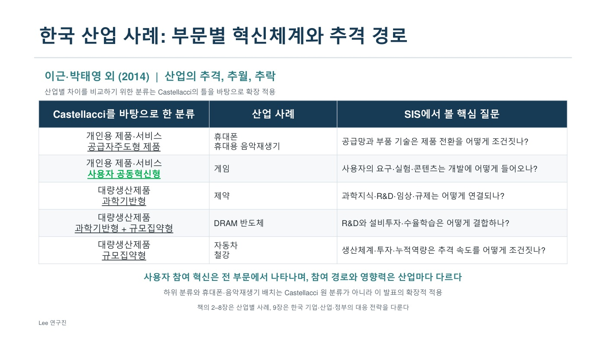
| 분류 | 사례 | SIS에서 볼 핵심 질문 |
|---|---|---|
| 개인용 제품·서비스 — 공급자주도형 제품 | 휴대폰, 휴대용 음악재생기 | 공급망과 부품 기술은 제품 전환을 어떻게 조건짓나? |
| 개인용 제품·서비스 — 사용자 공동혁신형 | 게임 | 사용자의 요구·실험·콘텐츠는 개발에 어떻게 들어오나? |
| 대량생산 — 과학기반형 | 제약 | 과학지식·R&D·임상·규제는 어떻게 연결되나? |
| 대량생산 — 과학기반형 + 규모집약형 | DRAM | R&D와 설비투자·수율학습은 어떻게 결합하나? |
| 대량생산 — 규모집약형 | 자동차, 철강 | 생산체계·투자·누적역량은 추격 속도를 어떻게 조건짓나? |
주의: 하위 분류와 휴대폰·음악재생기 배치는 Castellacci 원 분류가 아니라 이 발표의 확장 적용. "사용자 참여 혁신은 전 부문에서 나타나며, 참여 경로와 영향력은 산업마다 다르다."
- 단서: 2014년 책이라 대부분 제조업 이야기이고 소프트웨어 사례가 적다. 바뀐 상황을 잘 봐야 한다.
1) 휴대폰 — 단말기 기업 혼자가 아니다 (W07b p25)
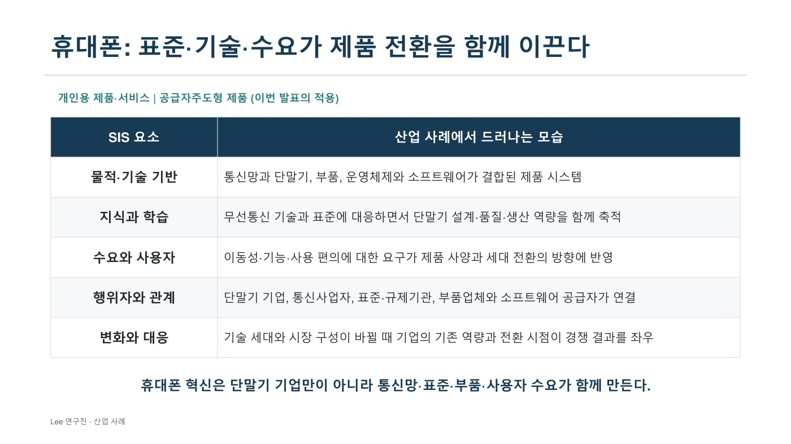
- "휴대폰 혁신은 단말기 기업만이 아니라 통신망·표준·부품·사용자 수요가 함께 만든다."
- 공급자들과 같이 움직여야 한다. (애플은 공급망을 중국에 두었다가 지금 머리 아플 것.)
2) 게임 — 이용자가 혁신 과정에 들어온다 (W07b p26) 시험 포인트
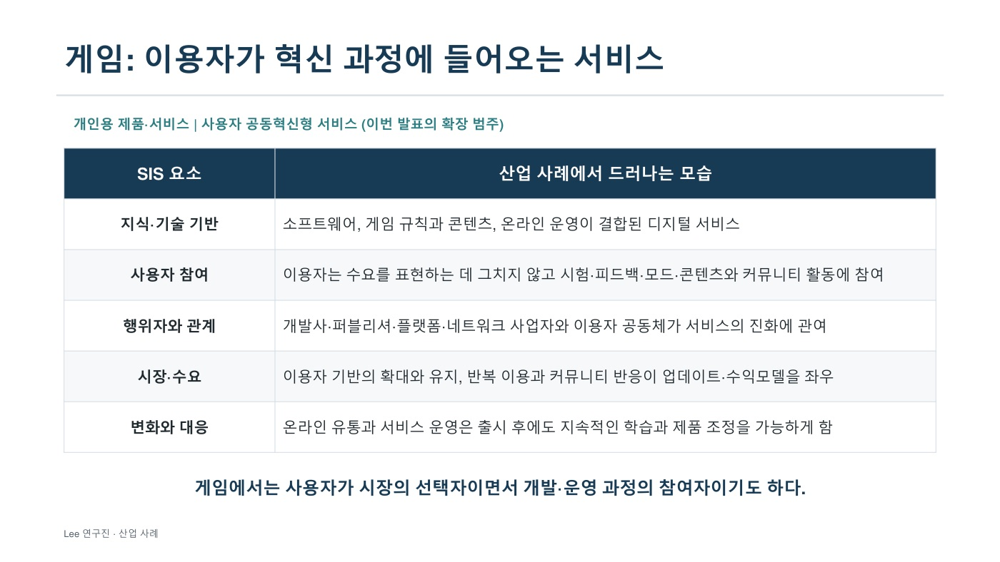
- 이용자는 수요 표현에 그치지 않고 시험·피드백·모드·콘텐츠와 커뮤니티 활동에 참여. 온라인 운영은 출시 후에도 지속적인 학습과 제품 조정을 가능하게 함.
- "게임에서는 사용자가 시장의 선택자이면서 개발·운영 과정의 참여자이기도 하다."
이건 우리가 기획하지 않았는데도 벌어지는 일이라서 놀라운 일인데, 유튜브를 보면 외국 사람들이 한국말을 너무 잘해요. '수고하셨습니다'를 어떻게 번역하냐에 따라 외국 사람들이 화낸다고, '너도 고생하라는 얘기냐' 이런 거까지. 수요자가 창출하는 시장이 엄청나게 커졌습니다. 옛날에는 다 공급자가 창출하는 시장 얘기를 많이 했죠.
출시 후에도 지속적인 운영이 가능해진 것, 이게 가장 드라마틱한 사례가 뭡니까? BTS죠. 이게 누가 기획해서 만든 게 아니야. 하이브 방시혁이 아미가 그렇게 있을 줄 알고 기획했겠어요? '이런 게 생기네, 이거 좀 관리하자' 이 정도 개념이었지, 그게 이렇게 파워풀할 줄.
- 샤오미 연구(중국 연구자의 20년 데이터 분석 논문): 클라우드 소싱 → 커뮤니티 → 생태계로 고객과의 관계망이 단절적으로 바뀌는 세 단계. 중국은 내부 시장이 너무 커서 디지털 시대에 그 역량이 엄청나게 작동한다.
- 개인화: 소비자 입장에서는 personalization, 기업 입장에서는 customization. 디지털 시대 비즈니스의 가장 큰 변화 중 하나.
- 한국 대중문화의 저력: 게임은 디지털 기술의 힘. 봉준호·박찬욱·이창동·황동혁 등 유명 감독들이 다 계급과 사회 문제를 다룬다는 공통점.
3) 휴대용 음악재생기 — 기기가 아니라 생태계 (W07b p27)
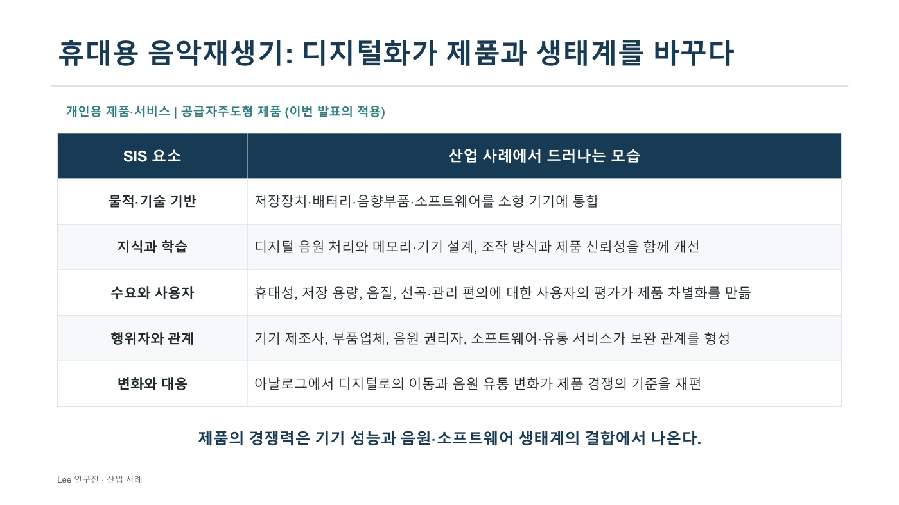
- "제품의 경쟁력은 기기 성능과 음원·소프트웨어 생태계의 결합에서 나온다."
- 스티브 잡스와 iTunes가 음원 권리 관계를 해결하면서 음악재생기 시장이 사라졌다(휴대폰으로 컨버전스). 잘나가던 국내 MP3 업체도 사라졌다.
보충시험 포인트W01/11 Innovation Ecosystem의 하류 보완재 병목과 같은 이야기다. 한국 MP3 업체는 기기(부품)는 잘 만들었지만 음원 권리라는 보완재를 쥐지 못했다.
수업에서 나온 논점
- 보충시험 포인트W06/06과 직결: W06에서 교수님은 국가가 고른 성장동력보다 유저 커뮤니티가 붙은 K-pop·게임·화장품이 더 컸다고 했고 "BTS가 그게 될 줄 누가 알았어"라고 했다. W07에서 같은 사례를 SIS의 사용자 공동혁신형이라는 이름으로 다시 다뤘다.
- Term paper 후보(수업노트 표시): 사용자 공동혁신형 산업(게임·K-팝 팬덤 등 수요자 창출 시장)을 SIS로 분석 — 교수님이 "이 책에는 아직 안 들어 있다", "수요·유통 쪽은 더 연구해야 한다"고 한 빈 영역.
- 보충W02-1/07 Lundvall의 사용자–생산자 상호작용이 디지털 시대에 극단적으로 강해진 형태다.
보충 사례 보충
- 보충von Hippel의 사용자 혁신(user innovation): 많은 혁신이 제조사가 아니라 선도 사용자(lead user)에게서 나온다는 연구. 게임 모드(mod) 커뮤니티에서 탄생한 카운터스트라이크, DOTA가 대표 사례다.
수업 프레임에서의 위치
- SIS가 공급(생산) 중심이라는 한계를 교수님이 수요 쪽으로 확장하는 지점. W05 공급자 중심성 비판, W06 NIS 비판과 같은 방향의 교수님 관점이 SIS에서도 나타난다.
출처 · 태그
리딩
- 이근·박태영 외 (2014) 산업의 추격, 추월, 추락 ★SIS Core Reading
수업노트
- 수업노트/W07_강의기록_261017.md §5-10
태그
예상 퀴즈 포인트
- '사용자 공동혁신형' 산업의 특징을 게임 사례로 설명하고, 교수님이 말한 "수요자가 창출하는 시장"의 의미를 쓰라. 서술형
- 휴대용 음악재생기 사례에서 한국 MP3 업체가 사라진 이유를 SIS(또는 혁신 생태계) 관점에서 설명하라. 서술형
- 비교형: W06(K-pop·게임, 유저 커뮤니티)과 W07(사용자 공동혁신형)의 사례 해석을 연결하라. 비교형
대량생산 산업 사례와 기술 안보 — DRAM·자동차·철강·제약
Mass-production sector cases; cumulativeness in DRAM; technological infrastructure and technological security
한 줄 정의
한국의 대량생산 산업들은 SIS 요소가 서로 다르게 작동한다. DRAM은 R&D만으로 안 되고 대규모 생산 학습과 투자가 누적되어야 하며, 자동차는 공급망 전체가 함께 움직여야 하고, 철강은 공정·설비 역량이 핵심이며, 제약은 STI가 압도적이다. 그리고 과학기술이 사회의 기반이 되면서, 과학기술 투자의 정당성에 기술 안보(technological security)가 추가된다 — 소부장처럼 하나만 막혀도 통째로 무너지는 시대.
쉽게 말하면 보충
맛집 레시피를 훔쳐 가도 10년 동안 불 조절하며 실패해 본 경험은 못 훔쳐 간다(DRAM 누적성). 그리고 요즘은 특정 양념 하나를 한 나라만 만드는데 그 나라가 수출을 막으면 전 세계 식당이 문을 닫는다(기술 안보).
핵심 내용
1) DRAM — 과학기반 + 규모집약 (W07b p28) 시험 포인트
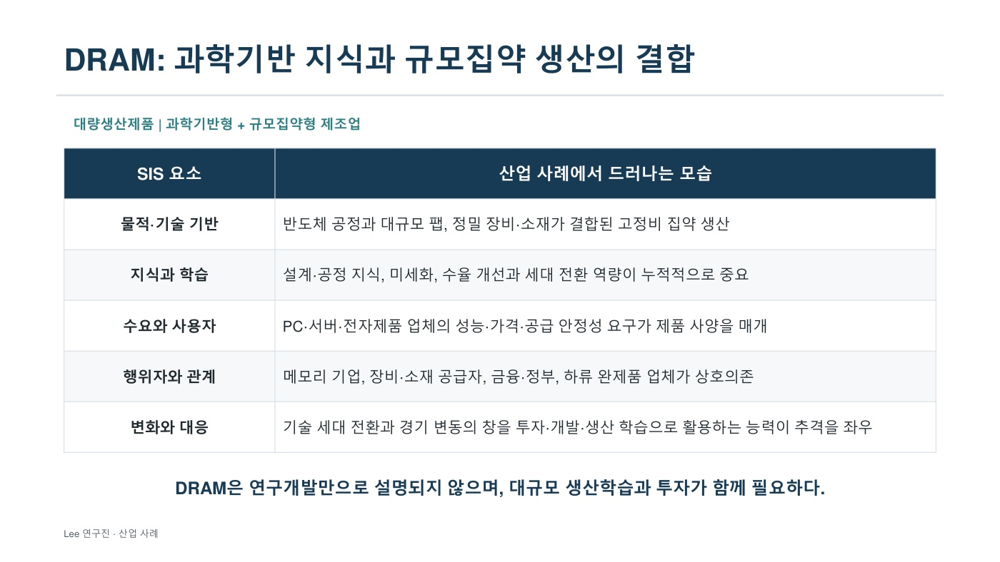
- 설계·공정 지식, 미세화, 수율 개선과 세대 전환 역량이 누적적으로 중요. 기술 세대 전환과 경기 변동의 창을 투자·개발·생산 학습으로 활용하는 능력이 추격을 좌우.
DRAM은 연구개발만으로 설명되지 않으며 대규모 생산 학습과 투자가 함께 필요하다. 이건 누적적인 거예요. 아무리 투자해도 그 시행착오를 겪지 않으면 (그다음 단계로 못 들어가요). 중국이 아무리 해도 할 수가 없는 거예요. 사람을 빼가서 그대로 카피해서 만들려고 해도, 빼가고 난 다음에 다시 그냥 떨어지면 실제로 어떤 일이 벌어지는지 잘 모르는 거야.
- 단, 인력 이동을 일방적으로 비난하지는 않았다. 한국도 발전할 때 사람들이 회사를 옮겨 다니며 기술을 전파했다. 기술 확산이라는 관점에서는 얼마든지 벌어질 수 있는 일이고, 하나의 잣대로만 보지 말라. 하이닉스가 현대반도체 인수 이후 성공한 것도 현장의 고생 덕분이라며 박수를 쳤다.
보충시험 포인트W07-2/06 누적성과 대비: 전기차·바이브 코딩은 누적성이 치워진 사례, DRAM은 누적성이 여전히 지켜 주는 사례다. 둘을 묶으면 "누적성은 산업마다 다르다"는 SIS의 요점이 된다.
2) 자동차 — 공급망과 함께 (W07b p29)
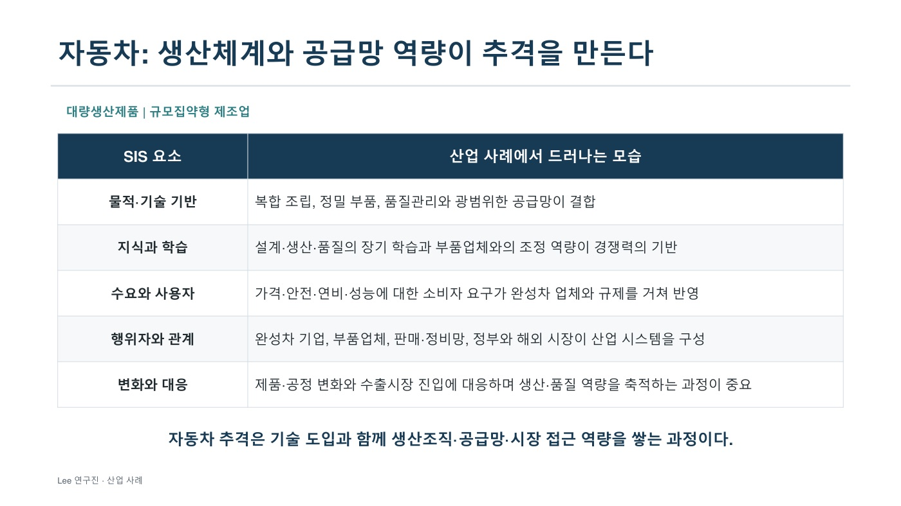
- "자동차 추격은 기술 도입과 함께 생산조직·공급망·시장 접근 역량을 쌓는 과정이다."
- 1차·2차 벤더가 쫙 깔려 있어 우리 회사만 잘해서는 안 되고 같이 움직여야 한다.
3) 기술 인프라와 기술 안보 시험 포인트
여기서 중요한 개념 하나 등장할 수 있어요. 테크놀로지컬 인프라. 과학기술의 포션이 점점 증가하고 있어 우리 사회를 만든. 아까 과학기술 투자를 학문적 우수성, 경제적 유용성, 사회적 유용성 이렇게 얘기했는데, 거기에 테크놀로지컬 시큐리티(기술 안보)라는 개념이 들어가지 않을 수가 없어요. 아주 쉽게 말해서 소부장 — 저쪽에서 하나 딱 막아버리니까 통째로 (타격을 받는) 거죠.
그래서 대체 불가라는 말이 나오는 거예요. 그런 기술 한두 가지를 꽉 잡고 있으면 (상대가) 큰일 난다고 생각할 수밖에 없는 사회가 지금 돼가고 있다는 얘기지. 거꾸로 생각하면 우리가 당할 걸 잘 생각해야 돼요. 정유·화학 이런 것들 놓치면 안 돼요. 중국한테 밀린다고 그래서 그냥 넘겨주면 안 돼요.
보충시험 포인트W07-1/02의 정부 투자 세 정당성(학문적 우수성·경제적 유용성·사회적 유용성)에 교수님이 네 번째로 기술 안보를 붙인 것이다. 같은 날 앞 강의와 뒤 강의를 잇는 대목이라 비교형으로 좋다. W06/05 Freeman의 기술 인프라(연결된 국가 역량)가 이제 안보의 대상이 된다는 흐름이기도 하다.
4) 철강 — 공정 결합 역량, 그리고 탄소 (W07b p30)
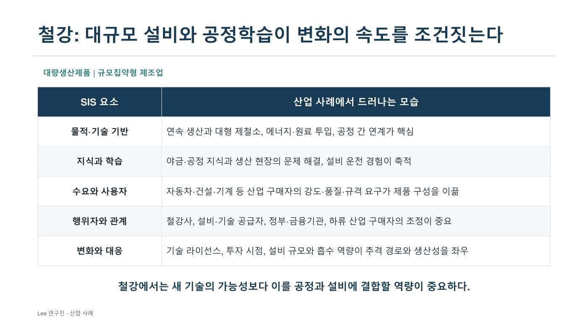
- "철강에서는 새 기술의 가능성보다 이를 공정과 설비에 결합할 역량이 중요하다."
- 20·21세기 문명의 기본 재료. 에너지 다소비 업종이라 CO₂가 엄청 나와 수소환원제철로 가려 하는데, 그러려면 전력이 엄청나게 필요하다. 원전에 반대한다면 그 리스크를 국제 무대에서 어떻게 해결할지까지 고민해야 한다. (우리가 안 만들면 동남아 시장을 다른 나라가 다 먹는다는 맥락도.)
5) 제약 — STI가 압도적 (W07b p31)
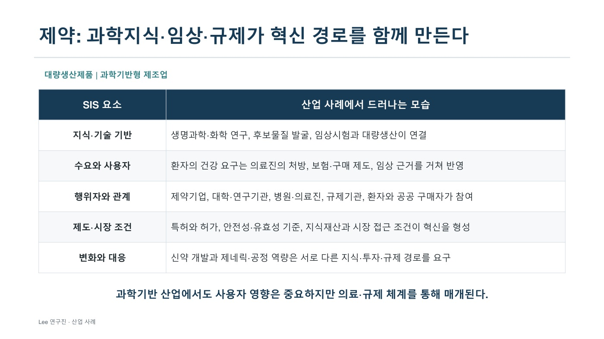
- "과학기반 산업에서도 사용자 영향은 중요하지만 의료·규제 체계를 통해 매개된다."
- DUI보다 STI가 훨씬 크다. 싱가포르는 다국적 제약사의 R&D 거점을 유치해 제약의 수도가 되었다 — 누적적이지 않고, 생산은 한국 같은 곳에 맡기고, 똑똑한 사람을 모으면 되니까. 다만 브레인층과 일반 노동자층의 계층 격차가 사회 통합 문제로 나타나고 있다.
보충제약은 누적성이 낮아서 인재 유치로 빨리 추격할 수 있었다. DRAM과 정반대 — 같은 '과학기반형'이라도 누적성이 다르면 추격 전략이 달라진다.
수업에서 나온 논점
- Q2. 사양산업에서 공급망 핵심 역량을 어떻게 지킬까 (수업노트 W07 §6):
우리가 보면 사양 산업은 떠나라, 다른 쪽으로 넘겨라 얘기하잖아요. 그거 다시 한 번 생각해 봐야 돼. 베트남으로 넘겨라 저기로 넘겨라 하지 말고 잘 생각해 봐요. 뭘 넘겨야 될지, 뭘 남겨야 될지.
중요한 거를 넘기지 말아야 되는 게 있고, 걔들이 따라 하려고 백날 애써도 쉽게 못 따라오는 거, 누적적인 이런 것들은 잡고 있어요. 그냥 쉽게 통짜로 하면 안 되고 기술 단위까지 내려가는 것도 생각을 해봐요. 어디서 지식이 형성됐는지도 따져봐야 돼.
그 지역에 장소 기반(place-based)의 암묵지라든지 크리티컬 지식이 가치를 좌우한다면 그런 데로 가야죠.
- 보충시험 포인트판단 기준 두 가지: ① 누적성(못 따라오는 것은 남긴다) ② 지식이 형성되는 장소(현장의 암묵지가 가치를 좌우하면 그곳으로 간다). 산업 단위가 아니라 기술 단위로 쪼개서 판단하라는 것.
- Term paper 후보(수업노트 표시): 사양산업의 기술 단위 역량 보존 전략(무엇을 넘기고 무엇을 남길지)을 공급망·누적성 관점에서 분석.
보충 사례 보충
- 보충2019년 일본 수출규제: 일본이 불화수소·포토레지스트·플루오린 폴리이미드 3개 품목의 한국 수출을 규제하면서 '소부장' 국산화가 국가 과제가 됐다. 교수님이 말한 "하나 딱 막아버리니까"의 실제 사건이다.
- 보충ASML: 첨단 반도체 노광장비(EUV)를 사실상 독점 공급하는 네덜란드 기업. '대체 불가' 기술이 지정학적 무기가 되는 대표 사례.
수업 프레임에서의 위치
- SIS 강의의 실전 파트. 같은 '대량생산'이라도 누적성·공급망·STI 비중이 다르면 추격 경로와 정책이 달라진다는 것을 한국 사례로 보여 준다.
출처 · 태그
리딩
- 이근·박태영 외 (2014)
수업노트
- 수업노트/W07_강의기록_261017.md §5-10
- 수업노트/W07_강의기록_261017.md §6 Q2
태그
예상 퀴즈 포인트
- DRAM 산업에서 "연구개발만으로 설명되지 않는다"는 말의 의미를 누적성 개념으로 설명하라. 중국 전기차(누적성 무력화)와 비교하라. 비교형
- 교수님이 과학기술 투자의 정당성에 '기술 안보'를 추가한 이유를 소부장 사례로 설명하라. (W07-1의 세 정당성과 연결) 서술형
- 사양산업에서 "무엇을 넘기고 무엇을 남길지" 판단하는 교수님의 기준 두 가지를 쓰라. 서술형
- 제약(싱가포르)과 DRAM은 같은 과학기반형인데 추격 전략이 왜 다른가? 서술형
SIS 분석 질문과 디지털의 산업별 확산 (SIS 정리)
Digital diffusion differs by sector; SIS analytical questions; summary of Pavitt–Malerba–Castellacci–Lee
한 줄 정의
디지털 기술도 산업마다 다른 속도와 방향으로 퍼진다. 전자·소프트웨어에서는 제품의 핵심 기능이 되고, 철강 같은 공정 산업에서는 제어·관리·효율 개선에 쓰이며 설비 주기의 제약을 받는다. SIS는 이를 다섯 가지 분석 질문(생산기반·지식과 학습·행위자와 관계·수요와 제도·변화의 경로)으로 본다. 결론: "새로운 기술의 가치 창출 가능성은 산업의 물적 기반과 역량에 의해 다른 방향·속도로 실현된다."
쉽게 말하면 보충
같은 스마트폰이 들어와도 은행은 앱 하나로 지점을 없애고, 병원은 예약만 바뀌고 진료는 그대로, 농장은 날씨 확인용으로만 쓴다. 기술이 같아도 업의 본질(물적 기반)이 다르면 쓰임새와 속도가 다르다.
핵심 내용
디지털 기술의 산업별 확산 (W07b p32)
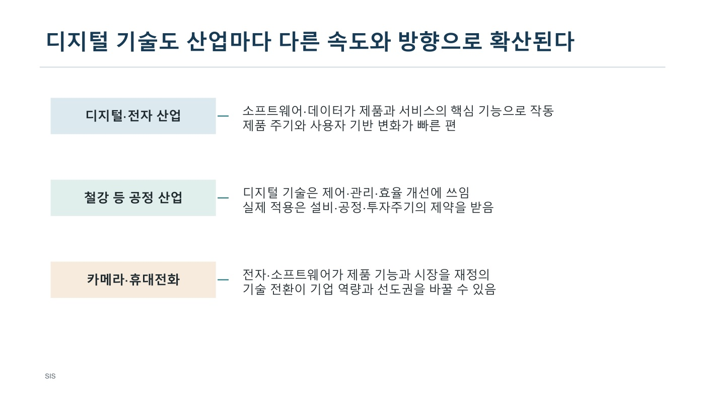
| 산업 | 디지털의 역할 |
|---|---|
| 디지털·전자 | 소프트웨어·데이터가 제품과 서비스의 핵심 기능. 제품 주기와 사용자 기반 변화가 빠름 |
| 철강 등 공정 산업 | 제어·관리·효율 개선에 쓰임. 설비·공정·투자주기의 제약 |
| 카메라·휴대전화 | 전자·소프트웨어가 제품 기능과 시장을 재정의. 기업 역량과 선도권을 바꿀 수 있음 |
보충W03/03 동심원형 혁신(AX가 기존 산업으로 퍼지는 것)을 SIS로 정밀하게 본 것이다. 동심원의 물결이 산업마다 다른 속도로 번진다.
SIS 분석 질문 (W07b p33) 시험 포인트
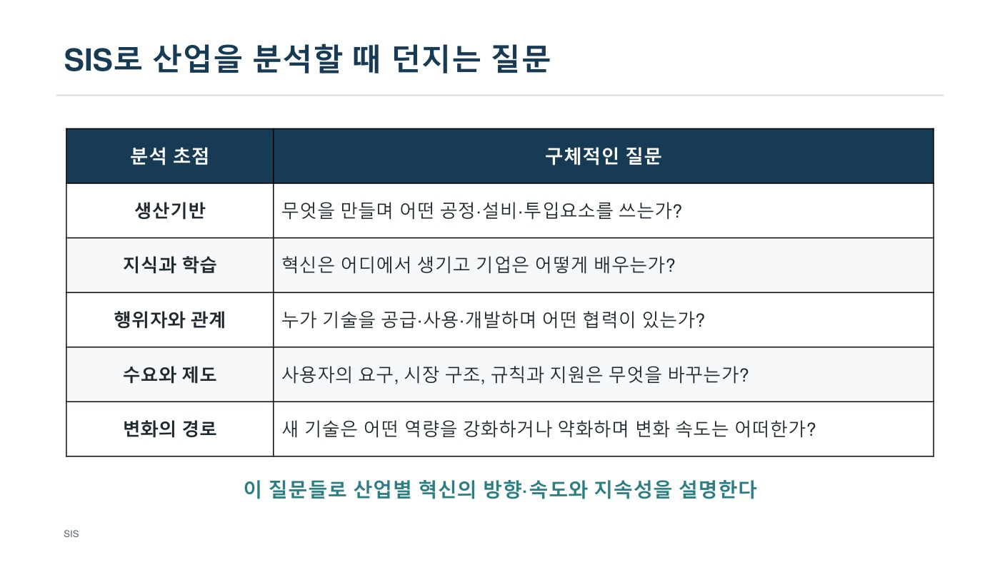
| 분석 초점 | 질문 |
|---|---|
| 생산기반 | 무엇을 만들며 어떤 공정·설비·투입요소를 쓰는가? |
| 지식과 학습 | 혁신은 어디에서 생기고 기업은 어떻게 배우는가? |
| 행위자와 관계 | 누가 기술을 공급·사용·개발하며 어떤 협력이 있는가? |
| 수요와 제도 | 사용자의 요구, 시장 구조, 규칙과 지원은 무엇을 바꾸는가? |
| 변화의 경로 | 새 기술은 어떤 역량을 강화하거나 약화하며 변화 속도는 어떠한가? |
"이 질문들로 산업별 혁신의 방향·속도와 지속성을 설명한다."
보충시험 포인트Term paper에서 SIS를 쓴다면 이 표가 분석 목차 그대로다. 교수님 예시 "SIS 퍼스펙티브로 정유 산업을 보겠다"(W07 Term paper 오리엔테이션)에 이 다섯 질문을 대입하면 된다.
핵심 정리 (W07b p34) 시험 포인트
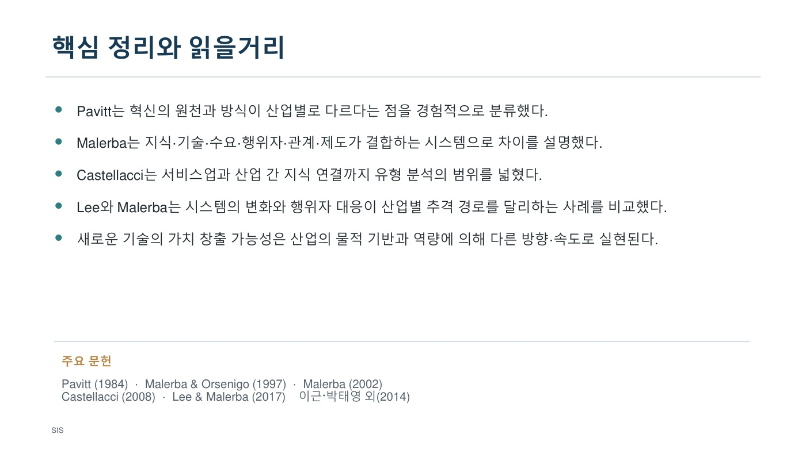
| 연구자 | 기여 |
|---|---|
| Pavitt | 혁신의 원천과 방식이 산업별로 다르다는 점을 경험적으로 분류 |
| Malerba | 지식·기술·수요·행위자·관계·제도가 결합하는 시스템으로 차이를 설명 |
| Castellacci | 서비스업과 산업 간 지식 연결까지 범위 확장 |
| Lee & Malerba | 시스템 변화와 행위자 대응이 산업별 추격 경로를 달리하는 사례 비교 |
교수님의 평가 — 수요·규제 쪽이 비어 있다
- 기존 연구는 생산(production) 쪽이 훨씬 많이 강조되어 있고, 규제·사용자 쪽은 더 연구해야 한다.
- "근데 한국은 아직도 이 정도 수준까지도 분석을 별로 안 하고 있었다는 게 이해가 잘 안 되는데. 정책 수준에서 그 정도 분석을 해서 움직여야 되는 게 맞는데."
수업에서 나온 논점
- Q1. 전통 제조업(로우텍)은 왜 R&D 지원에서 밀리나 (수업노트 W07 §6): AX 같은 걸 하는 게 더 잘 뽑히니까 그쪽으로 쏠린다. "농업은 농업, 행안부는 행안부, 이렇게 수요 부처가 돼야 되는데, 다 공급 부처, 다 과기부 흉내를 내고 있어." 네덜란드 농업처럼 산업(부처)에 맞게 해야 한다 → W07-1/01.
- 보충시험 포인트SIS의 정책적 함의가 바로 이것이다. 산업마다 혁신 방식이 다르면 정책도 산업마다 달라야 한다. 모든 부처가 같은 AI R&D를 하는 것은 SIS 관점에서 가장 나쁜 정책이다. W07-1(정책)과 W07-2(SIS)가 여기서 만난다.
- W08(10/24) — "SIS는 정보집약 산업 이전에 만든 틀이라 낡은 것 아니냐" (수업노트 W08 §2-8 끼어든 질문):
Pavitt의 텍소노미는 옛날에 만들었기 때문에 그때는 인포메이션 인더스트리가 없었어요. 그런데 정보 산업이 확산될 때 어디에 먼저 확산될까, 어떤 산업이 이걸 쓰면서 경쟁력을 더 얻을까를 SIS를 놓고 볼 수가 있다는 겁니다. 모든 산업에 다 퍼져가지 않아요. 편차가 있습니다. 그 편차를 볼 때 SIS를 보는 것이고.
- W08 Q16 — AI 도입이 산업마다 다른 이유를 SIS로 설명할 수 있나: Pavitt 분류(규모 집약, 공급자 주도, 과학 기반 등)에 따라 AX 도입에 차이가 난다. 데이터가 쉽게 확보되고 그 데이터로 효율을 높일 수 있다고 보는 산업, 표준 공정을 가진 산업은 AX가 빨리 된다.
- 보충시험 포인트이 파일의 "디지털도 산업마다 다른 속도로 퍼진다"를 AI에 그대로 적용한 답이다. SIS를 왜 공부하는지에 대한 교수님의 직접적인 답.
보충 사례 보충
- 보충산업별 맞춤 정책 예: 독일의 Industrie 4.0은 제조업(규모집약·전문공급자형)의 공정 디지털화에 초점을 맞췄고, 미국의 같은 시기 정책은 소프트웨어·플랫폼 쪽이 강했다. 같은 '디지털 전환'이라도 산업 구조에 따라 정책이 달랐다.
수업 프레임에서의 위치
- SIS 강의의 결론. 다음 회차 TIS(기술 단위 시스템)로 넘어가며, 분석 단위가 국가(NIS) → 산업(SIS) → 기술(TIS)로 좁아진다.
출처 · 태그
리딩
- Pavitt (1984)
- Malerba & Orsenigo (1997)
- Malerba (2002)
- Castellacci (2008)
- Lee & Malerba (2017)
- 이근·박태영 외 (2014)
수업노트
- 수업노트/W07_강의기록_261017.md §5-11
- 수업노트/W07_강의기록_261017.md §6 Q1
- 수업노트/W08_강의기록_261024.md §2-8 끼어든 질문, §3 Q16 — SIS는 낡았나, AI 도입의 산업별 차이
태그
예상 퀴즈 포인트
- Pavitt·Malerba·Castellacci·Lee & Malerba가 SIS에 각각 기여한 바를 한 문장씩 쓰라. 서술형
- SIS의 다섯 분석 질문을 들고, 한 산업(예: 정유·철강·소프트웨어)에 적용해 보라. 서술형
- SIS 관점에서 "모든 부처가 같은 AI R&D를 하는 것"을 비판하라. (수요 부처 vs 공급 부처, 네덜란드 사례) 비교형